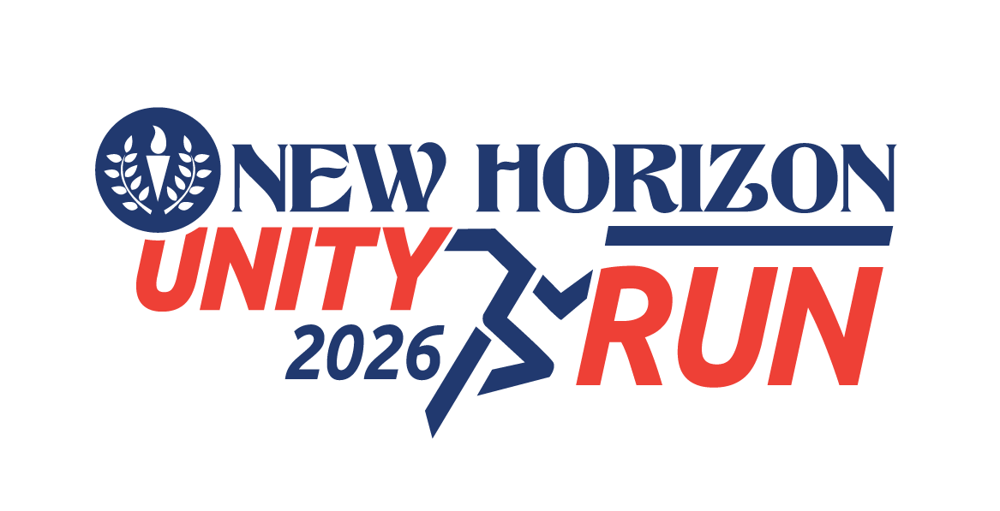

Page Not Found
The New Horizon Unity Run 2026, scheduled for March 8, 2026, has been postponed. The revised date will be announced shortly.
All registered participants will receive a full refund to the original mode of payment at the earliest.
Thank you for your understanding and continued support.

The New Horizon Unity Run 2026, scheduled for March 8, 2026, has been postponed. The revised date will be announced shortly.
All registered participants will receive a full refund to the original mode of payment at the earliest.
Thank you for your understanding and continued support.
Go to Homepage